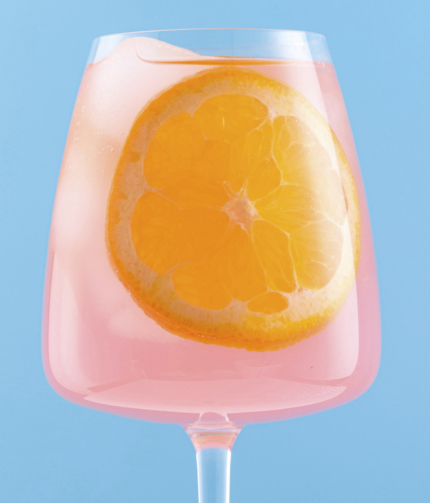

CORNELL UNIVERSITY
Portuguese "Vinho Verde" red and white wine ratings predicted using multiple linear regression, ridge, lasso, regression tree, bootstrap aggregation (bagging), and random forest provides insight into the performance of various classifiers. The variables contained in the dataset include fixed acidity, volatile acidity, citric acid, residual sugar, chlorides, free sulfur dioxide, total sulfur dioxide, density, pH, sulfates, and alcohol. Multiple linear regression, ridge, and lasso performed the best.
